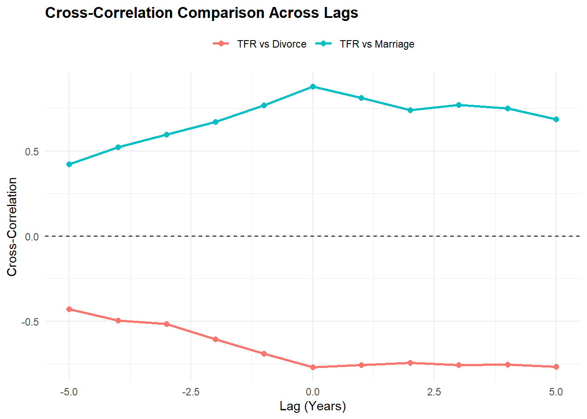

pacman::p_load(tidyverse, knitr, patchwork, TSstudio)
analysis_df <- readRDS("data/analysis_df.rds")
tfr_df <- readRDS("data/tfr_df.rds")
asfr_df <- readRDS("data/asfr_df.rds")
series_key <- readRDS("data/series_key.rds")
extract_ccf_tbl <- function(x, y, x_name, y_name, lag_max = 5) {
ccf_obj <- ccf(x, y, lag.max = lag_max, plot = FALSE, na.action = na.omit)
tibble(
lag = as.numeric(ccf_obj$lag),
correlation = as.numeric(ccf_obj$acf),
pair = paste(x_name, "vs", y_name)
)
}
get_peak_ccf <- function(df, pair_name) {
df %>%
slice_max(order_by = abs(correlation), n = 1, with_ties = FALSE) %>%
transmute(
Pair = pair_name,
`Peak Lag (Years)` = lag,
`Peak Correlation` = correlation
)
}Cross-Correlation Analysis: Singapore Fertility Trends: A Visual Analytics Study
Load dataset
Cross-Correlation Analysis
Our group uses cross-correlation analysis to explore how fertility, marriage, and divorce move relative to one another across different lags. Unlike ordinary correlation, Cross-correlation captures the direction, strength and timing of co-movement between fertility and the demographic indicators, showing whether the series move together or in opposite directions, how strong that pattern is, and the lag at which it is strongest. This is useful for exploring demographic timing, such as whether changes in marriage or divorce tend to occur earlier or later than changes in total fertility rate (TFR).
The results should be interpreted as exploratory evidence of co-movement across time rather than proof of cause and effect. They are also intended to complement the regression section by helping to identify which lag values may be worth testing for later modelling.
1.1 Organising the EDA Output for Cross-Correlation
The dataset prepared in the EDA section is already suitable for cross-correlation analysis. The main requirement is to keep the yearly observations in chronological order and retain the variables needed for the lead-lag comparison: TFR, marriage, and divorce.
| year | tfr | marriage | divorce |
|---|---|---|---|
| 1980 | 1.82 | 9.8 | 0.8 |
| 1981 | 1.78 | 10.6 | 0.9 |
| 1982 | 1.74 | 9.7 | 0.9 |
| 1983 | 1.61 | 9.0 | 1.0 |
| 1984 | 1.62 | 9.8 | 0.9 |
| 1985 | 1.61 | 9.2 | 0.9 |
| 1986 | 1.43 | 7.7 | 1.0 |
| 1987 | 1.62 | 8.9 | 1.1 |
| 1988 | 1.96 | 9.3 | 1.1 |
| 1989 | 1.75 | 8.7 | 1.1 |
ccf_df <- analysis_df %>%
select(year, tfr, marriage, divorce) %>%
drop_na() %>%
arrange(year)
ccf_preview <- ccf_df %>%
slice_head(n = 10)
knitr::kable(
ccf_preview,
digits = 3,
caption = "Sample of the yearly dataset used for cross-correlation analysis"
)1.2 Cross-Correlation Between TFR and Marriage
This section explores whether the co-movement between TFR and marriage is strongest in the same year or at earlier or later years. This helps answer the following question:
“Does marriage move most closely with fertility in the same year or does the strongest pattern appear with a time shift?”
A 5-year lag window was chosen since changes in marriage and fertility are more likely to be related within a reasonably near time horizon rather than over very long lags.
| lag | correlation | pair |
|---|---|---|
| -5 | 0.421 | TFR vs Marriage |
| -4 | 0.522 | TFR vs Marriage |
| -3 | 0.596 | TFR vs Marriage |
| -2 | 0.671 | TFR vs Marriage |
| -1 | 0.769 | TFR vs Marriage |
| 0 | 0.878 | TFR vs Marriage |
| 1 | 0.812 | TFR vs Marriage |
| 2 | 0.742 | TFR vs Marriage |
| 3 | 0.772 | TFR vs Marriage |
| 4 | 0.751 | TFR vs Marriage |
| 5 | 0.686 | TFR vs Marriage |
Observation:
The cross-correlation between TFR and marriage is positive across all tested lags, indicating that the two series generally move in the same direction. The strongest value appears at lag 0 (0.878), suggesting that the clearest co-movement occurs in the same year rather than after a time shift. The correlations remain relatively high at nearby lags, such as lag -1 (0.769), lag 1 (0.812), and lag 2 (0.742), but they gradually weaken as the lag moves further away from zero. This suggests that the alignment between marriage and fertility is strongest in the near term with same-year timing appearing most prominent. Based on this pattern, lag 0 and nearby short lags may be the most relevant candidates for further testing in the regression analysis.
lag_max <- 5
tfr_ts <- ts(ccf_df$tfr, start = min(ccf_df$year), frequency = 1)
marriage_ts <- ts(ccf_df$marriage, start = min(ccf_df$year), frequency = 1)
divorce_ts <- ts(ccf_df$divorce, start = min(ccf_df$year), frequency = 1)
TSstudio::ccf_plot(
x = tfr_ts,
y = marriage_ts,
lags = 0:lag_max,
title = "Cross-Correlation: TFR and Marriage"
)
ccf_marriage_tbl <- extract_ccf_tbl(
x = ccf_df$tfr,
y = ccf_df$marriage,
x_name = "TFR",
y_name = "Marriage",
lag_max = lag_max
)
knitr::kable(
ccf_marriage_tbl,
digits = 3,
caption = "Cross-correlation values between TFR and marriage across lags"
)1.3 Cross-Correlation Between TFR and Divorce
This section applies the same lag-based comparison to divorce. It helps answer a similar question:
“Does divorce move most closely with fertility in the same year, or does the clearest timing pattern appear earlier or later?”
| lag | correlation | pair |
|---|---|---|
| -5 | -0.430 | TFR vs Divorce |
| -4 | -0.495 | TFR vs Divorce |
| -3 | -0.517 | TFR vs Divorce |
| -2 | -0.605 | TFR vs Divorce |
| -1 | -0.692 | TFR vs Divorce |
| 0 | -0.771 | TFR vs Divorce |
| 1 | -0.757 | TFR vs Divorce |
| 2 | -0.745 | TFR vs Divorce |
| 3 | -0.757 | TFR vs Divorce |
| 4 | -0.755 | TFR vs Divorce |
| 5 | -0.769 | TFR vs Divorce |
Observation:
The cross-correlation between TFR and divorce is negative across all tested lags, showing that the two series tend to move in opposite directions throughout the lag window. The largest absolute value occurs at lag 0 (-0.771), which suggests that the strongest co-movement appears in the same year rather than at a shifted lag. The correlation remains relatively strong for nearby positive lags, including lag 1 (-0.757) and lag 5 (-0.769), but is weaker for more distant negative lags. Compared with the marriage results, the divorce pattern is weaker in directionally positive co-movement and instead shows a stable inverse pattern with fertility. This indicates that divorce does not follow the same timing structure as marriage in relation to TFR.
TSstudio::ccf_plot(
x = tfr_ts,
y = divorce_ts,
lags = 0:lag_max,
title = "Cross-Correlation: TFR and Divorce"
)
ccf_divorce_tbl <- extract_ccf_tbl(
x = ccf_df$tfr,
y = ccf_df$divorce,
x_name = "TFR",
y_name = "Divorce",
lag_max = lag_max
)
knitr::kable(
ccf_divorce_tbl,
digits = 3,
caption = "Cross-correlation values between TFR and divorce across lags"
)1.4 Combined view of Section 1.2 and 1.3
This section combines the results from Sections 1.2 and 1.3 into a single comparison view. By placing the peak cross-correlation and lag patterns for marriage and divorce side by side, it becomes easier to compare how the two indicators align with fertility across the same lag window.
This type of summary view is also useful for the planned Shiny application, where users may want to compare multiple indicators interactively in one panel.
| Pair | Peak Lag (Years) | Peak Correlation |
|---|---|---|
| TFR vs Marriage | 0 | 0.878 |
| TFR vs Divorce | 0 | -0.771 |

Observation:
This summary combines the marriage and divorce results into a single comparison view, making it easier to compare their lag structures directly. Both indicators reach their peak cross-correlation with TFR at lag 0, which suggests that the clearest co-movement for both appears in the same year rather than after a longer time shift. However, the direction differs across the two indicators. Marriage shows a positive peak correlation of 0.878, indicating that higher marriage values tend to align with higher fertility, while divorce shows a negative peak correlation of -0.771, indicating that higher divorce values tend to align with lower fertility.
Across the lag window, the marriage series remains consistently positive and the divorce series remains consistently negative, showing that the two indicators have opposite directional patterns in relation to fertility. This combined chart and table are useful because they provide a concise side-by-side view of both timing patterns and help prepare for the next stage of analysis in the regression section.
peak_ccf_tbl <- bind_rows(
get_peak_ccf(ccf_marriage_tbl, "TFR vs Marriage"),
get_peak_ccf(ccf_divorce_tbl, "TFR vs Divorce")
)
knitr::kable(
peak_ccf_tbl,
digits = 3,
caption = "Peak cross-correlation and corresponding lag by indicator"
)
peak_plot_df <- bind_rows(
ccf_marriage_tbl %>% mutate(series = "TFR vs Marriage"),
ccf_divorce_tbl %>% mutate(series = "TFR vs Divorce")
)
ggplot(peak_plot_df, aes(x = lag, y = correlation, colour = series)) +
geom_line(linewidth = 1) +
geom_point(size = 2) +
geom_hline(yintercept = 0, linetype = 2) +
labs(
title = "Cross-Correlation Comparison Across Lags",
x = "Lag (Years)",
y = "Cross-Correlation",
colour = NULL
) +
theme_minimal() +
theme(
plot.title = element_text(face = "bold"),
legend.position = "top"
)Conclusion
Overall, the results show that the clearest pattern for both marriage and divorce occurs at lag 0, meaning the strongest alignment with fertility appears in the same year. Marriage displays a positive pattern with fertility, while divorce shows a negative pattern.
This section therefore provides an exploratory summary of the lag structure in the data and serves as a useful bridge to the panel regression section, where these relationships are examined more formally.